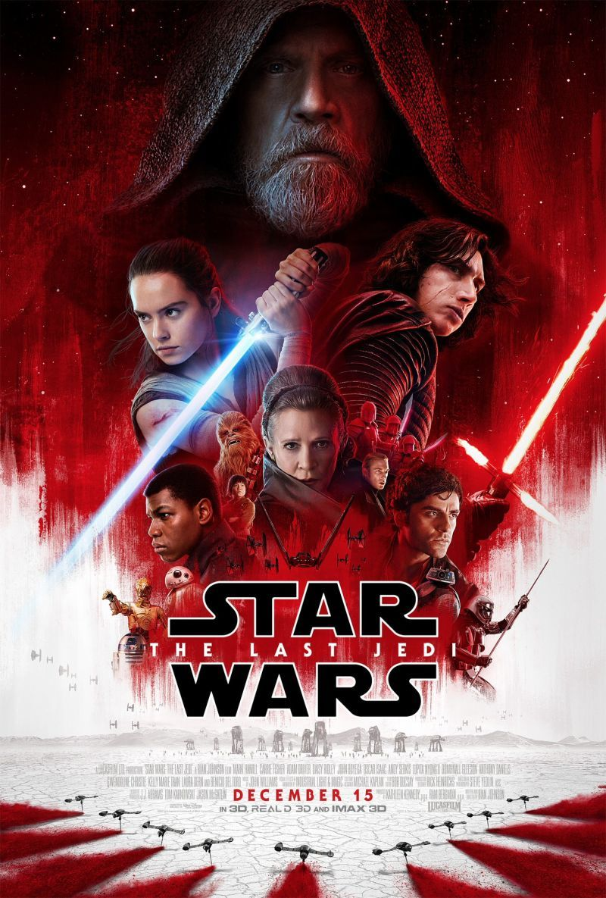
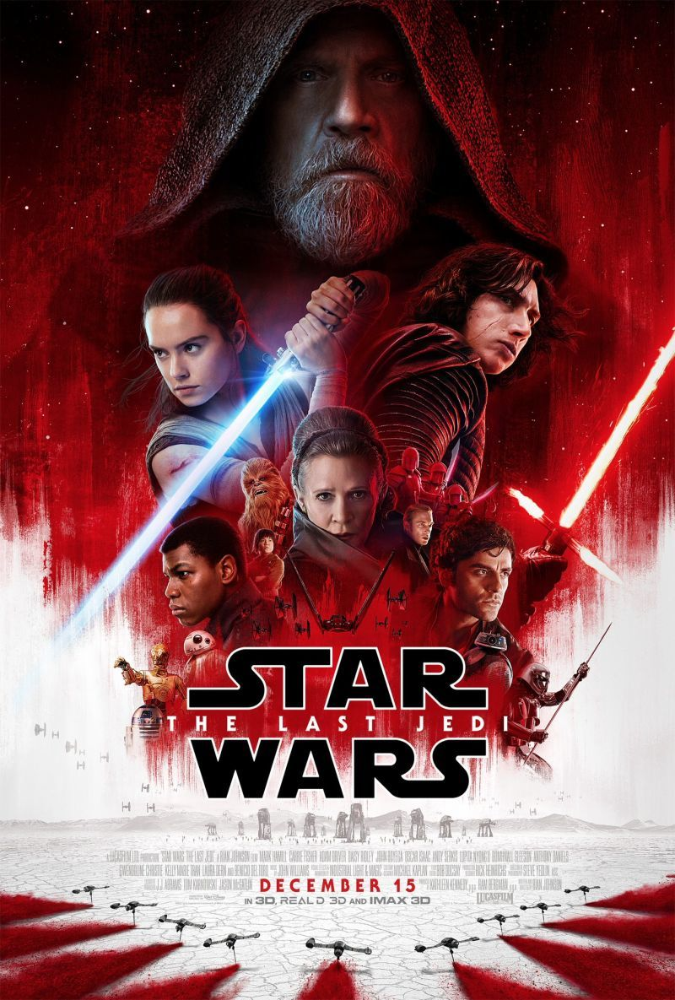

Sequel Triology
 


Star Wars: The Force Awakens
Approximately 30 years after the destruction of the second Death Star, Luke Skywalker, the last known surviving Jedi Master has disappeared. Both the First Order, a successor to the fallen Galactic Empire, and the Resistance, a military force backed by the New Republic led by Luke's twin sister, General Leia Organa, scour the galaxy in an attempt to find him.
Leia sends Resistance pilot Poe Dameron on a secret mission to the village of Tuanul on the desert planet Jakku, to meet with village elder Lor San Tekka, who has obtained a map to Luke Skywalker's location. During the meeting, First Order stormtroopers under the command of Kylo Ren and Captain Phasma attack the village. Poe and his astromech droid BB-8 attempt to flee in their T-70 X-wing starfighter, but a pair of stormtroopers disable the engines with their blasters. With no alternative, Poe gives the map to BB-8 and orders the BB unit to flee. Poe remains behind to cover BB-8's escape.
After stormtrooper FN-2187 is deployed, FN-2003 is hit with blaster fire by Poe. FN-2187 goes to help his squadmate, but FN-2003's wound proves fatal, and in his final moments, FN-2003 smears his blood on FN-2187's helmet before dying, deeply affecting FN-2187. After securing the area, the remaining villagers are herded into the town square. Tekka is captured and brought before Kylo Ren, who demands to know where the map leading to Luke is. Tekka responds that he knows who Ren used to be, and chides Ren that he cannot escape his real identity. Growing impatient, Ren kills Tekka by striking him down with his lightsaber.
Poe takes a shot at Ren from cover, but Ren casually stops the blaster bolt in mid-air with the Force. Poe is captured, and Ren decides to interrogate him further back on their ship. Before leaving, Phasma asks what to do with the crowd of captive villagers, and Ren orders them all slaughtered. Stormtrooper FN-2187 is horrified as the massacre plays out in front of him, remaining motionless and not firing his weapon.
Star Wars: The Last Jedi
The Last Jedi begins at a frantic pace with The Resistance finding themselves in a dire predicament, as the First Order continues their relentless pursuit to destroy them. The film begins with the First Order launching an attack on the last remaining Resistance base in the galaxy, with the intention of wiping out the rebellion for good. Much like the early moments of The Empire Strikes Back, the Resistance formulates a plan to escape the base utilising their remaining transports. A raging space battle ensues leaving the Resistance with extensive losses. This is directly due to some overzealous decisions made by the cocky Poe Dameron. As a consequence, the Resistance is forced to outrun the First Order and the dark legions of Supreme Leader Snoke if they are to survive.
Star Wars: The Rise of Skywalker
"The Rise of Skywalker" follows the remnants of the Resistance as they face the First Order once again. Rey, the last Jedi, continues her training under General Leia Organa's guidance. As she grapples with her own powers and identity, she discovers a dark connection to Emperor Palpatine, who has returned and seeks to regain control of the galaxy.
Rey, along with her friends Finn, Poe Dameron, and Chewbacca, embark on a perilous journey to find a way to stop Palpatine. They seek information about a Sith Wayfinder, a device that can lead them to the Sith homeworld, Exegol. Along the way, they encounter new allies and confront old adversaries, all while battling their own doubts and fears.
Meanwhile, Kylo Ren, now the Supreme Leader of the First Order, is also searching for Palpatine. His conflicted past and connection to Rey make him a central figure in the struggle between the light and dark sides of the Force. Rey and Kylo Ren's paths converge as they confront their shared destiny and the truth about Rey's lineage.
In a climactic battle on Exegol, the Resistance fights against the Sith Eternal and Palpatine's forces. Rey and Kylo Ren must confront their own demons and make difficult choices that will determine the fate of the galaxy. The epic conclusion brings together the power of the Jedi and the resilience of the Resistance as they strive to bring balance to the Force and overcome the darkness that threatens to consume them all.